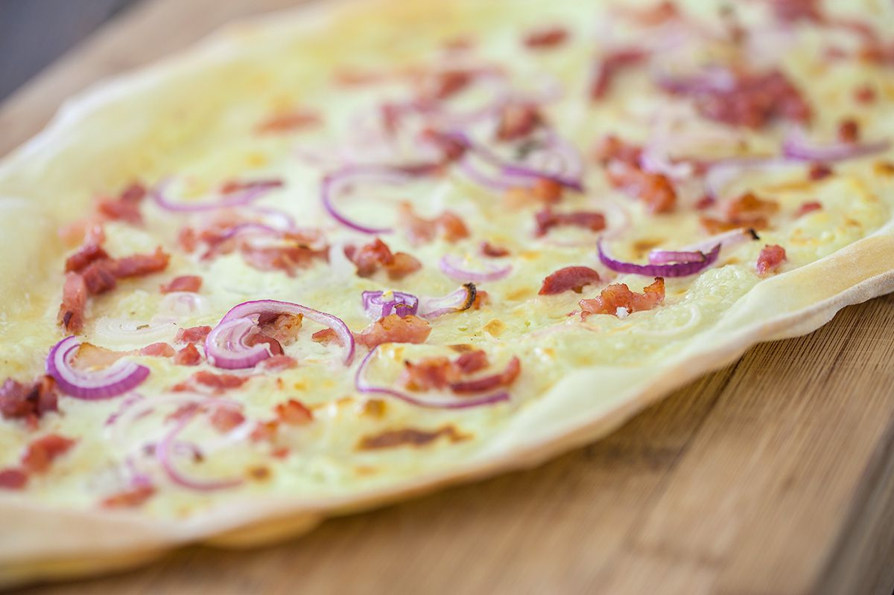

Flämmkuchen with red onion, pancetta and crème fraiche

A very simple, but classic rendition of flammküchen. Easy to make, but delicious nonetheless.
Ingredients
- Flammküchen pastry
- 50g Crème fraiche
- Red onion
- 100-200g Bacon or pancetta
- Salt & pepper
Steps
- Preheat the oven to 200 degrees celcius
- Roll out the flammküchen pastry on an oven plate
- Spread the crème fraiche over the pastry using an inverted spoon
- Cut the red onion into half circles and freely put on the pastry
- Evenly distribute bacon or pancetta
- Put in the oven for 8-10 or until the pasty has a nice golden brown color
Voilá, you now have an easy-to-prepare meal to enjoy. Add pepper and salt if desired ( don´t use too much salt as the bacon or pancetta should
have made things salty enough.